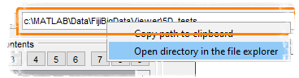

Did you know...
- Use the right mouse click over the path edit box with in the Path panel to start a popup menu
- Select "Open directory in the file explorer" or just copy the path into the system clipboard
|  |
You can easily open the current folder in the system file explorer:
|